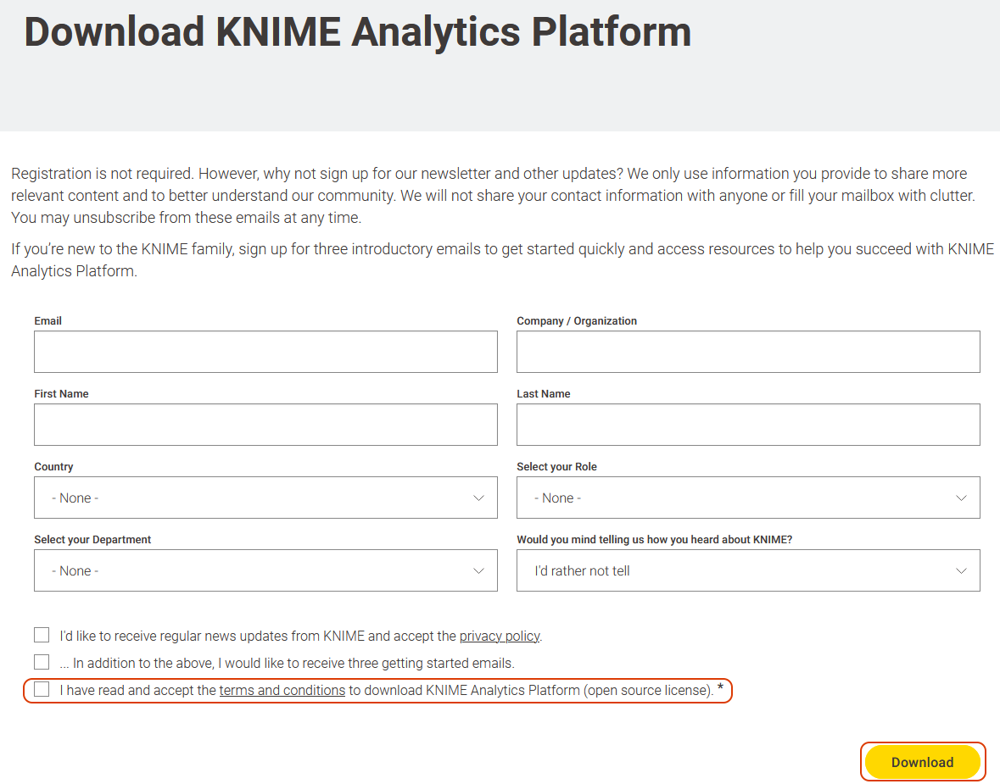
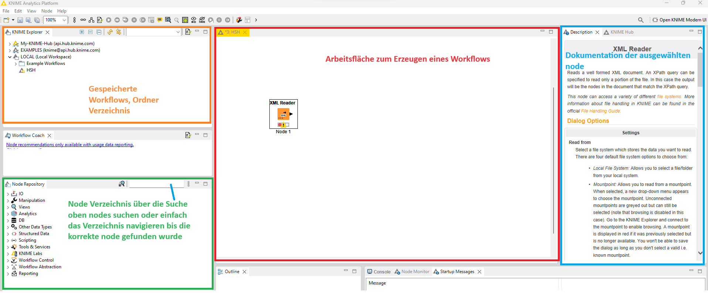
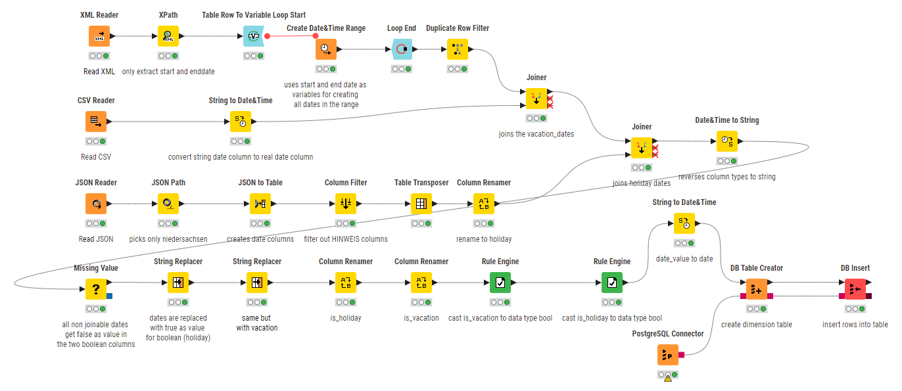

CREATE TABLE dim_date
(
date_id BIGINT NOT NULL
,date_value DATE NOT NULL
,date_iso CHAR(10) NOT NULL
,day SMALLINT NOT NULL
,day_of_week SMALLINT NOT NULL
,week SMALLINT NOT NULL
,month SMALLINT NOT NULL
,quarter SMALLINT NOT NULL
,year SMALLINT NOT NULL
,day_of_year SMALLINT NOT NULL
,day_text VARCHAR(50) NOT NULL
,month_text VARCHAR(50) NOT NULL
,quarter_text VARCHAR(50) NOT NULL
,day_text_abbrev CHAR(3) NOT NULL
,month_text_abbrev CHAR(3) NOT NULL
,is_holiday BOOLEAN NOT NULL
,is_vacation BOOLEAN NOT NULL
);
KNIME ist auf dem Übungsserver vorinstalliert. Wenn Sie dort arbeiten wollen, überspringen Sie den Rest dieser Sektion.
Auf den Laborcomputern müssen Sie die Software erst herunterladen und entpacken.
Download-Link: KNIME

Laden Sie "KNIME Analytics Platform for Windows (zip archive)" herunter.
Entpacken Sie nach dem Download das Zip-Archiv und führen Sie knime.exe aus.
Sie werden beim ersten Start darum gebeten ein Verzeichnis auszuwählen, in dem Ihre KNIME-Projektdateien abgelegt werden.

Rechtsklick auf einen Node öffnet das Kontextmenü. Dort gibt es nur drei relevante Optionen für diese Übungsaufgabe
Eine Auflistung aller Tage im Jahr 2022 liegt, CSV-formatiert, hier zum Download bereit:
date_dimension.csvDie Feiertagsinformationen im JSON-Format, können hier heruntergeladen werden:
feiertage2022.jsonEine Liste der deutschen Ferientage im Jahr 2022, im XML-Format, kann hier heruntergeladen werden:
schulferien2022.xmlDas Feld "is_vacation" soll mit einem booleschen Wert darstellen, ob das Datum der Zeile ein Feiertag in Niedersachsen ist.
is_vacation BOOLEAN NOT NULL
Das Feld "is_holiday" soll mit einem booleschen Wert darstellen, ob das Datum der Zeile ein Feiertag in Niedersachsen ist.
is_holiday BOOLEAN NOT NULL
Gerne dürfen Sie andere Tools oder ein anderes Vorgehen wählen. Wir prüfen nur das Endergebnis.
Ziel für Notenverbesserung: Die Datumsdimension soll in Ihrer Postgres-DB angelegt und vollständig befüllt sein.
